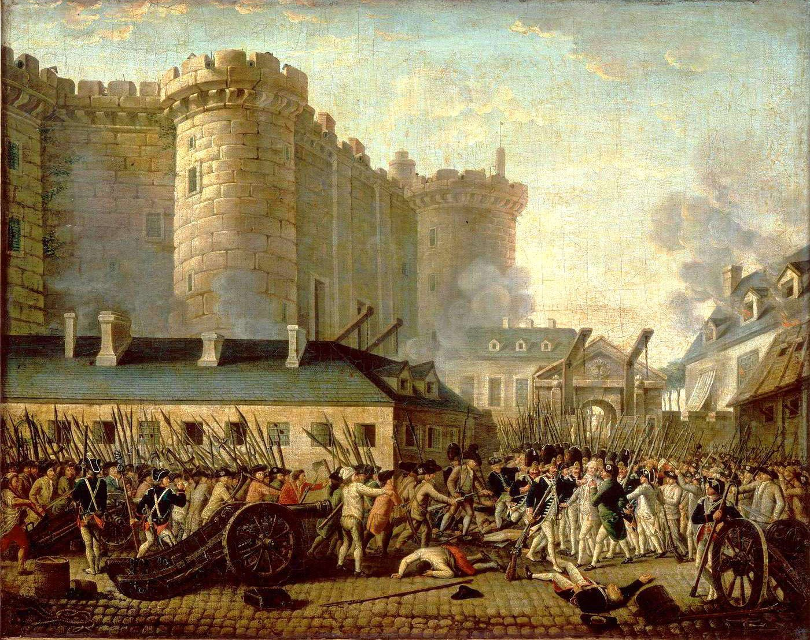

Un contact a disparu. Il a laissé deux photos. Elles contiennent tout ce qu'il faut.
Tu travailles pour une cellule d'analyse. Un informateur sous couverture devait transmettre les coordonnées d'un lieu de rendez-vous. Avant de disparaître, il a uploadé deux photos sur un serveur anonyme — sans aucun message.
Ces photos semblent anodines. Mais un agent expérimenté sait que l'image n'est jamais le seul message : les métadonnées parlent aussi. Exploite chaque fichier pour retrouver le lieu et la date du rendez-vous.
Format du flag : CTF{ville_lieu_AAAA}
